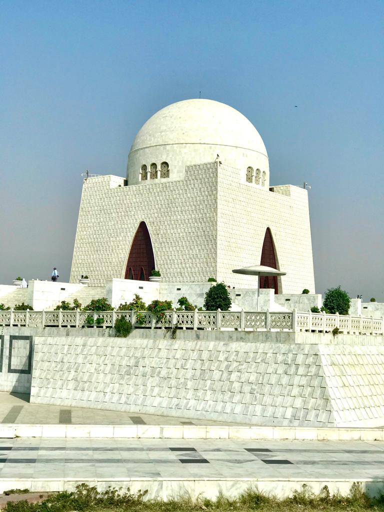

Sindh
Mizar-e-Quaid
Mazar-e-Quaid is the tomb of the founder of Pakistan, Muhammad Ali Jinnah. Sited in the center of Karachi, Pakistan on a natural plateau, this marble structure was designed by the Indian architect Yahya Merchant and was completed in 1970.The proposal and construction of Mazar e Quaid was a perilous journey, spanning over quite a few decades. After Jinnah’s death, his resting place was simply marked by a marble slab on a plinth. To make a proper memorial site, the Quaid-e-Azam Memorial Fund (QMF) was set up in 1949. The QMF was responsible for designing a befitting memorial site for Jinnah.
After rejecting several proposals over the years, the QMF held an international competition, inviting architects from all over the world to submit their designs. A British architect was declared the winner of the competition by a European jury. However, Fatima Jinnah, the Quaids sister, remained unsatisfied with the winning design, vetoing the competition completely.
Fatima Jinnah took control of the QMF and commissioned an Indian architect, Yahya Merchant, to design her brother’s mausoleum. Construction of the monument began in 1960, with President Ayub Khan laying the foundation stone. After a decade of construction, Mazar e Quaid was inaugurated by Yahya Khan in 1971.

Islamabad
Faisal mosque
The master plan of the city Islamabad was inspired by the Greek architecture.The plan is triangular and is developed on a grid system with its apex towards the Margalla hills.
The region 351 square miles is divided into eight functional zone, these zones are, Administrative sector, Diplomatic Enclave, commercial zones, forest belt, national park area, residential sector, special institutions, industrial zone. The mosque got named when king Faisal bin Abdul-Aziz, king of Saudi Arabia, visited Pakistan and like the idea of the mosque then bear the expenditures as a gift to the people of Pakistan.
The concept that Dalokay achieved in the king Faisal mosque was to present the mosque as a crown for the modern capital, Islamabad. Where he developed his concept based on Quranic guidelines. The context, modernity, monumentality and a valuable heritage from resent generation to the coming ones all are the main design consideration that help Dalokay to achieve in the king Faisal mosque. Moreover, the mosque is not close with a boundary walls as any other mosques, but instead it’s an open too the land. The dome in his design was unusual, where he used an Arabic tend design instead of having a dome to resemble and to be an extension of the Margalla Hills.

Lahore
Badshahi mosque
Badshahi Mosque is renowned for the carved marble and elaborate plasterwork that are used throughout the mosque's interior and It was built in 1673 by the Mughal Emperor Aurangzeb in Lahore, Pakistan, near the Minar-e-Pakistan. It is one of the most famous historical places in PakistanConstruction of the mosque began in 1671 under the direction of Muzaffar Hussain (Fida'i Khan Koka), Aurangzeb's brother-in-law and the governor of Lahore. It was originally planned as a reliquary to safeguard a strand of the Prophet's hair. Its grand scale is influenced by the Jama Mosque of Delhi which had been built by Aurangzeb's father Shah Jahan. The plan of Badshahi mosque is essentially a square measuring 170 meters on each side. Since the north end of the mosque was built along the edge of the Ravi river, it was not possible to install a north gate like the one used in the Jama Mosque, and a south gate was also not constructed in order to maintain the overall symmetry. Within the courtyard, the prayer hall features four minarets that echo in minature the four minarets at each corner of the mosque's perimeter.
The prominence of the mosque in the imperial vision was such that it was constructed just a few hundred meters